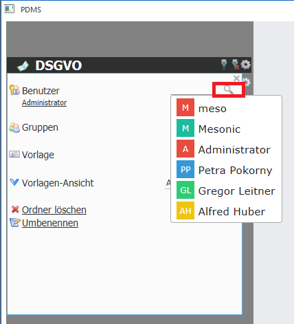
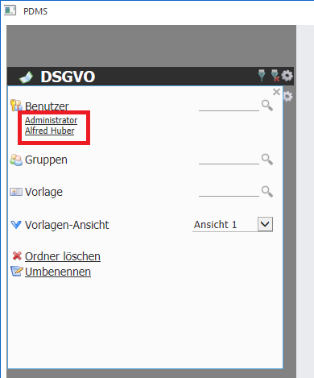
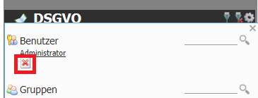
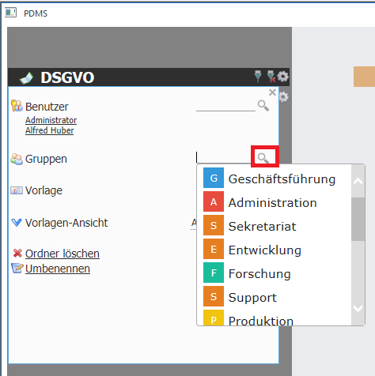

Über die Einstellungen können dem Buch Benutzer zugeordnet werden. Durch einen Klick auf die Suche (Lupe) werden sämtliche Benutzer vorgeschlagen und können per Mausklick ausgewählt werden.

Nachdem die Benutzer ausgewählt wurden, werden dies unterhalb der Überschrift "Benutzer" angezeigt.

Wenn ein bereits hinzugefügter Benutzer wieder entfernt werden soll, dann muss der betroffene Benutzernamen mit der Maus angeklickt werden und kann dann über den "X - Button" den Benutzer wieder entfernen.

Möchte man nicht jeden Benutzer einzeln hinzufügen, so können über die Gruppen auch Benutzergruppen zugeordnet werden. All jene Benutzer, die sich in dieser Gruppe befinden, haben dann Zugriff auf den entsprechenden Eintrag.

Hinweis
Ein weiterer Vorteil der Gruppen ist, dass Benutzer die in der Benutzerverwaltung einer Gruppe zugeordnet werden, automatisch Zugriff auf die relevanten Bücher erhält, ohne diese Berechtigung extra im Buch vergeben zu müssen, da die Berechtigung bereits über die Gruppe erteilt wurde.